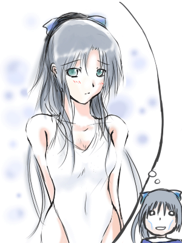
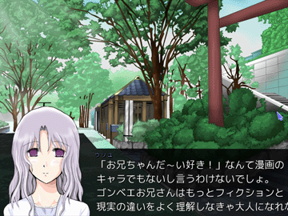

シルバーセカンド開発日誌
■
2010-07-26 (月) ずっとシル学イベント作成中▼もフッ！！ もフフッ！！
もッファー！！
さて、今週は、ずっとシル学のイベント作成に取り組んでいました。
もうどこをどうしゃべってもネタバレにしかならない部分なので
なかなか日誌で報告しにくいんですが、とりあえず、
日々なかなかいいペースで進んでいると思います。

【今回、作業していて思ったこと】
元のストーリーがあるからといって、あまりそれに縛られすぎると、
驚きを生み出しやすい話が作りにくいな、と感じました。
特にそう思ったのが、個性が薄いキャラクターのイベントを作っているときです。
思いっきり原作設定を破壊してしまうのは違和感を生み出す原因にもなるので、
なかなか難しいのですが、むしろ常に破壊が起きてるのが自分の作風だと思って、
もう少し激しくやっていきたいなと思い直しています！
特に、作者があまり興味を持てないキャラクターのイベントって、
作るのが苦しいので、何とかテコ入れしていきたいなあ！ と思います。
以下はいただいたコメントの抜粋です。
＞そういえば今回のトーテムはどれぐらいの強さなんですかね？ .
＞幻想譚では15人相手に無傷で勝てるぐらい強かったし、 .
＞見聞録ではケシゴムが邪魔でカンニングすらできなかったし、 .
＞ノートはただの喋る動物だったりで作品によって性能が異なってる気が
たぶん見聞録くらいです！ ノーマルモードなら人より強めで、
ハードモードでは一般人と主人公が同じくらいかなと思います。
＞ラクーンは二足歩行出来るんですよね！
どう見ても二足立ちできそうな感じなんですが、
アライグマだから微妙ですね。 うん。 ん？
＞シル学の画面比って4:3ですかね？
４：３です。画面解像度は640x480です。
＞そういえばウルフさんってS.T.A.L.K.E.RみたいなFPSとかTPSとか好きなんですか？
FPSやTPSは好きです。もっぱら無料のオンライン対戦ゲームで
盛り上がっていたんですが、最近はあまりやらなくなってしまいましたね。
FALLOUT3やOblivionなども好きです。
割と海外のRPGにはまってるのかもしれません。
＞「そんな、フェザーが使えないトーテムだなんて…異議アリッ!!」
＞「あやまれ！幻想譚で最初にフェザーを選んだ俺にあやまれ！」
＞「フェザーは役に立たないんじゃなくて、最終能力値がちょっと .
＞ 残念なだけなんだからね！ 勘違いしないでよね！」 .
その他たくさんの苦情のコメントが！ フェザーさんごめんなさい！！
フェザーに対してのご意見ご感想が、かつてないほどの多さだったので、
愛されっぷりに嫉妬してしまいます。 皆さま、本当にありがとうございます。
フェザーは、せめて、S.EXP 300ポイントで飛べる能力を身につけるとか、
原作内で人間化するとかだったら、もっと人気出たのかなあ……。 ■
2010-07-18 (日) シル学 近くて遠いゴール▼考古学編用のダンジョンは、難産だった最後の一つが完成し、
今は、ラストスパートに向けて、必要なイベントのリストをまとめています。
この段階で、我ながらウヒョーと言ってしまう量です、ゴールが遠い！
開発は、面白いといえば面白いのですが、すでに２年３ヶ月も激闘を
繰り広げていると、新しい雰囲気の物語を作りたくもなってくるというものです。
連載作家さんは凄い、飽きないのかなあ。
もうやめたいのにやめさせてくれない、なんてこともありそうですけれど。
あ、それと、これからは日誌のペースをちょっとずつ落として、
ちょくちょくシル学公式ページの更新も行っていく予定です。
今回はトーテム紹介を追加しました、日記を熱心に見て下さっている
方々には既知の情報ばかりですが、少しずつまとめていきたいと思います。
【シルフェイド学院物語 公式ページ】
そして今回は、トーテムにちなんだ今日のスクリーンショットです。

【今回、作業していて思ったこと】
適用できる作業は限られていると思いますが、
「数が多くて、次に何をすればいいかを思い出さなければいけない作業」
に関しては、ワクだけ先に作れる類のものなら、
先にまとめてワクだけ作ってから中身を作っていくのがなかなか効率的だと思いました。
たとえば【プログラム】なら、処理の大雑把な内容だけ
最初から最後までコメント文で書いて、あとでそのコメント文の処理を作っていく。
【イベントの作成】なら、イベントごとのファイルを、内容を一言メモって
起動タイプを入れただけ（中身はまだ作らない）のファイルを
最初に全部作っておく、といった感じのやり方です。
作業しているときも、「今使ってるツール内の文字を見る」だけで
「次にやれることが常に目に入ってくる」ので、
「あっちこっちに意識を移動させずに作業を続行できる」
という点が非常に有効だと感じました。
幻想譚のときも量が多かったため、身についたコツは多かったのですが、
シルフェイド学院物語は過去に例のない規模なので、
身についた技術やコツも過去に例がないほど多いです。
特に、今回はワンシーン作りに特化した技術が要求されていたので、
その点で、少しは成長できているといいなと思います。
以下は気になったコメントへの返信です。
＞「ファングにストレロクとくれば……S.T.A.L.K.E.Rですね、わかります」
＞「何そのZONE。でもブラッドサッカー辺りに .
＞ 追いかけられるシシト君とか見てみたいかもww」 .
おおおーお分かりなる人がいらっしゃったー！！
海外のゲームはややマイナーなので、仲間を見つけると嬉しいです。
海外のゲームのいいところも、どんどん取り入れていきたいですね。
S.T.A.L.K.E.Rはもちろん有料製品なんですが、マップに関しては、
フリー作品に対しては利用自由なんだとか、凄い。さすがに真似できません。
＞「ごめんなさい普通にクロウと間違えました・・・」
＞「ぱっと見、クロウさんと間違えた。」 .
な、なんだってー！！ いえ、それならそれで
目線の黒帯も意味もあったというものです！
＞サユキさんの没顔グラ並みに、ええーここまでやるのーって
＞思わせてくれることを期待します！ .
え、今回はセクシーな方面でそれをやりたいんですがダメでしょうか！？
＞クリプレさんところのシルセカ更新情報の紹介文が .
＞「今日のわんこ」になっていたのが爆笑クリティカルヒットでした。
情報ありがとうございます。こんばんは、今日のわんこです（ゲッソリ）！
今はちょっとずつ回復してますよ、大丈夫です。
＞（シル学は）Windows7では動作可能ですか？
ウディタで作ってるので、DirectX８以上が入っていれば動くと思うんですが、
逆に使用ライブラリが古すぎて挙動がおかしくなったりしないかが心配です。
問題があれば、パッチ配布も検討しなければならないと思います。
そのうちWindows7買ってこようかなあ、とも思うのですが、入れるPCがなくて。 ■
2010-07-10 (土) 強気でいきたい……▼
言ってる内に新しい職に就きそうで、ゲーム開発どころじゃ
なくなるかもしれないウルフです。色々がんばってます。
シル学が最後のゲームにならないように、うまく折り合い付けていきたい。
しかし超スーパーミラクルやる気みなぎってるおかげか色々出しすぎて
体重も減ってるしヤバいです、そろそろハイになりそう。
ある意味では、創作においてハイであるほど有利なことはないんですけれど。
冷めてるよりはよっぽどいいですよね。
【今回、作業していて思ったこと】
今回は、考古学編のクライマックスシーンを作っていました。
文章！ BGM！ 画像素材！ どれもそれなりのクオリティでないと
冷めてしまいがちなので、冷めない程度に、
どれも気合い入れて作ったり探したりしていました。
ええーここまでやるのーって思わせられるようなお話に
できているといいなあ、と思います。
残っているダンジョンは、あと一つです。
これが終われば、次からはイベント作業が待つのみ！
各クラスのキャラクターイベントは全部で15人分くらい！ って多！
どう考えても一人3日では終わりません。
そろそろ正式公開時期を9～11月くらいに引き延ばすときが来たようです……！
というか、ウディコンやら、その他色々で忙しすぎるときに公開日を詰め込むのは、
よく考えたら愚策すぎます。9月はきっと、もっと忙しいですから、
10月から12月くらいに伸ばして、新しい生活に慣れるようにするくらいの
ゆっくりさの方がいいかもしれません。今でさえまた血便出そうな兆候があります。
このペースで全部予定通り作ろうと思ったら死んじゃう気がしてきました。
何度も何度も延期して、お待たせしている皆さまには誠に申し訳ございません。
でも、とりあえず8月が終わるまでに、だいたいの部分を
終わらせたいと思っています。
9月以降はチューニングだけで済ませたいですね。
以下はいただいたコメントの抜粋です。
＞目線付けるだけじゃなくて名前も伏せてあげて！
＞多分クロウあたりと間違える人いるから！ .
色！ 色ー！！ たぶんクロウさんと間違える人は
そもそもクロウさんの名前すら覚えておられないと思うんですよ！
＞名前丸見えだよ！ プライバシー配慮しきれて無いよ！ｗ
プライバシーに配慮して実名！！ ドキッ、ドS仕様なインタビュー！！
大丈夫ですよ顔が出なかったらバレませんって！
でもファングさんって言っても、ストレロクさんの友達くらいしか
私は思いつきませんでした。たぶんほとんど誰もご存じでない予感。
＞ついにウディタでR-18ゲームを発見してしまった…。初めて見た。
＞でも絵は良かったのに操作性やゲーム性は悪かったなぁ。 .
ウディタは、操作性の部分についても自身で責任を取らないといけないので、
既存のツール使っておられる方には、なかなかそこまで意識しきれないと思います。
中には、自作でもしっかりインターフェースやゲーム性にこだわっておられる
凄い人たちもいるので、今後に期待したいですね！
でも、R18ならノベルツールの方が良かったりしません？そうでもないのかな。
＞＞バンダナの人なんてこれまで二人くらいしかいなかったのに .
＞えーっと、ガゼルにフォーゼル、あと蒼蛇のチンピラ二人・・・あれ？？
そういえば！ すっかり忘れてましたがたぶん後ろの3名は別に忘れても……。
＞最近、七夕という字がセタに見えて仕方がない
7月7日はセタの日！ といっても、顔も思い出せない人が多数のはず！
いやそうでもなかったりして？
私はゲームキャラの名前が覚えられない人間です。8月の終わりまで57日くらいとなりました、ウルフです。
ここまで切羽詰まってくると、あとどのくらいの日数で何しなきゃいけないか
だいたい分かってくるので、ますます気合いも入るというものです！

ということで今回は大興奮する犬キャラさん！
※実際の彼はこんな無節操な性格ではありません。
どこかでネタに走るにも、助走というか下地を付けていかないと面白くないので、
面白いところを作れるようになるまでがなかなか遠いです。
ゲーム的なベースとなるダンジョンだって、そういうところは
割と味気ないというか、人間味がない部分も多いですから、やや退屈なところも。
最初から中盤くらいまでは我慢のときですね！
イベントとかマップとか、いくつ作っても考えてもまったく苦にならない人は、
間違いなくゲーム作りの一つの素質があると思いますよ。
100、200個を超えて1000個作ってもなお平気なら、きっと本物です。
【今回、作業していて思ったこと】
9月に入ると開発する余裕がなくなるかもしれないことが分かっているので、
急ぎ急ぎ頑張りたいです。 というか期間中に完成するように
要素を切り詰めないといけないかも。 何はともあれ、
要素をこれ以上増やさず、まとめに入りつつ行きたいと思います。
でも一通り見回してみると、もともと切り詰める要素がほとんどない！
必要そうだなあって思うものを足していったら、どんどん公開予定が
伸びてしまって、皆さまには誠に申し訳なく思っております。
その分、これまでにない迫力の大ボリュームで
楽しい作品をお送りいたしますので、ご期待下さい！
分岐や選択多めのフリーっぽいシナリオ作ってると、
久々にシルフェイド見聞録みたいな、一本道ストーリーのADVを
作りたい気持ちも強くなっています。一本道ストーリーって楽ですよ！本当に！
フリーシナリオの何が大変かって、いつでも割と自由に他のイベントに
行けてしまうため、物語の整合性を取るのが大変なんです。
たとえば普通に作ると、「特定のキャラとケンカした」イベントがあっても、
仲直りイベントまでツンツンするはずが、
他のイベントではなぜかいつも通り接してくれちゃって
変な気分になったりとか、そういう整合ですね。
だから、そういうゲームはイベントが一個一個が完全に独立しているか、
または内容がどうとでも取れる淡白なゲームになっちゃうことが多いんですが、
できればそうしたくないなあ、というこだわりがあります。
でもそれがまた、新たな大変さを生み出してしまっているわけで。
といっても、本当に凄い有機的なフリーシナリオ作っておられる方から
見れば、私なんて「ハン（鼻で笑う）」ってレベルなんでしょうけれどね！
でも、こだわれる限りは、こだわっていきたいとも思うんです。
以下はいただいたコメントの抜粋です。
＞目線をつけられるだけで誰か分からない！不思議！！
＞単に覚えてないだけかもしれないけど .
バンダナの人なんてこれまで二人くらいしかいなかったのに！かわいそう！
でも実に目立たない人なので覚えてなくても仕方ない気がします。
＞予想外の目線王子に俺の腹筋がヤバいです。.
＞あとセタがトカゲのままで嬉しい。 .
ありがとうございます！ トカゲ人いいですよね！！（ハッスルしながら）
世界のみんながトカゲになればいいんだ！
＞「バルト先生はワンコですよ がウ○○に見えt」
＞「●ンコかと一瞬空目したのは秘密（はぁｔ」 .
もちろんそれを狙ったものです！ワンコ！
＞個人的にシル学のゲームの容量がどのくらいになるのか気になる所です。
＞動作環境がちょっと怪しいパソコンなので。頑張って下さい、応援しています。
現状で100ＭＢくらい、多くて200ＭＢ以内になると思います。
＞別に完成一ヶ月くらい遅れたって全然構わないので、シーナの
＞出番もアーサルートも作ってあげてくださいお願いします .
え、アーサも！？
＞それはさておき、私の地元では褌って売ってないんですよね。 .
＞T字帯だったら病院で売っているんですが、なんか違いますし….
＞ウルフさんはどういったお店で褌を買っているんでしょうか。 .
そごうなどのデパートや、その他百貨店で売ってると思いますよ。
お店の人にフンドシくださいって言わないと出ないかもしれません。
私はクラシックパンツくださいって言っても通じなくて
フンドシくださいって言い直したら出してくれました。
顔から火が出るほど恥ずかしかったです。 ■
2010-06-28 (月) シル学 考古学編 70％くらい？▼シルフェイド学院物語、考古学編のダンジョン作成のゴールが、
そろそろ見えてきました。まあ、現状ダンジョンだけで、
周辺イベントを一個も作ってないので、そもそも通しプレイじゃ
ダンジョンに行くことすらできない状況なんですけれどね！
周辺イベントも、これまた多いんでしょうけれど、
キャラクターのイベントは作ってて面白いので、楽しく進められそうです。
ガンガン進めていきますよ！ とりあえず残りのダンジョン早く終わらせます。
さて、今回は新キャラ紹介！！

新キャラ「あの俺、前にも、どこかで出てましたよね？」
主人公「えっ」 .
ということで、今回は考古学編の登場人物紹介！
考古学編で出会えるシルフェイドキャラは、以下の通りです。
バルト、アルバート、アーサ（攻略できるか不明）、
セタ、スケイル、？？？（秘密）、？？？（内緒♥＆未定）
などが加入する予定です。後ろの何人かはまだ未定ですが
共にダンジョン探索できるようになるかもしれません。
あ、セタはもちろんトカゲですよ。バルト先生はワンコです。
現代ものですが、シルエットノートとはややキャラの方向性が違います。
【今回、作業していて思ったこと】
なんだかハッキリとした言葉では言えないのですが、
最初は難しくて進む速度が遅かったダンジョン作成も、
慣れてくると最初の5倍以上の速度で進むようになってきました。
慣れて作業が洗練されていくことの恐ろしさを身に染みます。
その根本は、前にも【作業していて思ったこと】コーナーで言った(新ｳｨﾝﾄﾞｳ)のと同じ、
「まとめられる作業はまとめてやる」
「やらなければいけないことを全部書き出す」
「『量が少ないけれど面倒臭いこと』は最初にまとめてやっておく」
なんですけれど、これを実行するためには、
「ある程度実際に作業してみて、必要な作業の全容を把握する」
のが必要なんですよ。今回は、前者３つに関しては
自分が言ったことを忘れていながらも、案外、
ちゃんと実行できていたようで、知らない内に身についていたようです。
よかった！ 徐々に、次のステージに上るために努力していきたいです。
以下はいただいたコメントの抜粋です。
＞ひとつのことを長く続けていると、たまに振り返ってみるのが .
＞楽しいですね。しみじみしたり、新しい何かが見えてくるような
＞気がしたり。継続の醍醐味のひとつですね！ .
作業の工程を残しておくのが手間だなあ、と思っていたんですが、
残しておいてこうやって見返してみると、新たな発見があって
確かに面白いです！ 長期的なプロジェクトでは、
ある程度進むたびに、こうやって過去を見返すと、
ゴールまでの未来を見通すのも容易になりそうです。
今後も（ネタがなくなったときに）ちょくちょくやっていきたいですね！
＞ところで褌は「履く」でいいんでしょうか。教えて煙狼さん
フンドシは「シメる！！！」です。
男性にも女性にも、とてもお勧めです！
女性用フンドシで検索すると色々出てきますよ。
＞そう言えばリス君って死んじゃいましたが、リス君の登場シーンって
＞あります？個人的に大好きなキャラクターなんで。。 .
一人だけシルエットノートの解像度で出てくる分には全然問題ないんですよ。
ただ公式シナリオに登場シーンがあるかどうかは謎です！
隠しキャラとして出てくるくらいかも。
＞そういえばもう学院物語の値段は決まってるんですか？
公式ページに記載しております！
（ウディタの６４bit対応修正に対して）
＞一応、window7の64bitでも動きますよ。ただ、イベントが .
＞見えないので、イベントカラー用のキャラチップを用意して、
＞イベントを設置すれば見えるようになります。 .
はい、今回はその部分に対して修正を行っていました。
これで、32bitでも64bitでも、しっかり動作するようになるはずです！
皆さまからの暖かいコメント、いつも本当に励みになります！ ■
2010-06-21 (月) シル学の歩み3（Final）▼今週もダンジョンを作成し続けたり、ちょっと寄り道的に、
WOLF RPGエディターの64bitOS対応の改造を行っていました。
Windows7で64bitになった人が多いためか、
イベントが見えないよ～ってお嘆きの方が多いものでして、
早めに対応をしているところです。Windows7だとウディタ作品動くのかなあ。
WindowsVistaだと動かない方がおられるようで、何とも悲しいんですけれど。
【続々 シルフェイド学院物語の歩み】
ということで、今回でシルフェイド学院物語を振り返る回は最後です！
しみじみ振り返りながら
【2009年12月14日 公安委員会編開始！】
公安編を作り始めた時期です。
【2009年12月30日 サイト１１周年】
ついに10周年記念作品だったはずのシルフェイド学院物語は
11周年記念作品になってしまいました。
でも公開時のアオリ文は10周年記念作品って書きたいです。
【2010年1月10日 公安編２５％完成】
公安編、第一シナリオがおおよそ完成しました。
最初の一つは一ヶ月くらいかかってるんですね、長い！
でもここからシル学エディタも強化され、怒濤の作業高速化が始まります。
【2010年2月13日 公安シナリオ2完了】
【2010年2月27日 公安シナリオ3完了】
【2010年4月初旬 公安シナリオほぼ完成】
ちなみにこのシーズンは、脇でミニゲーム「シルフドラグーンゼロ」を作ってました。
武術部編もそうでしたが、おおよそ3～4ヶ月で1シリーズ完成という感じです。
シルドラゼロはストーリー付けるのが楽ちんなので、
シル学Verでもちょっとしたお話を入れようかな、どうしようかな、と考え中です。
【2010年4月1日（2日） シルフドラグーンゼロ公開】
無駄にがんばったエイプリルフールでした。
シルドラゼロはあんまり見向きされないかなと思ってたんですが、
予想以上の多くの方に遊んでいただけたようで嬉しかったです。
【2010年4月21日～ アイスランド噴火に巻き込まれる】
ひっそりお出かけしたら、たまたま大事件が起きました。
現地の大騒ぎを肌で体験できたので楽しかったですが、おかげで
考古学編のスタートが微妙に遅れてしまっているのも事実です。
【2010年5月10日 考古学編の開始準備をおおよそ終える】
必要なミニゲームや、ダンジョン機能の実装を行っていました。
ここから、本格的な考古学編の開発が始まります。
【2010年5月31日 顔グラ仕様についての話題】
全裸に見えるスケイルのスクリーンショットがアップされてます。
もう、本当に最近のことですね。
【2010年6月7日～ シル学の歩み】
ここから過去を振り返るシーズン開始です。
３回の長きにわたって振り返ってみましたが、とうとう戻ってきてしまいました！
こうやって見ていると、シル学のシステムに１年ちょっとくらい、
シナリオ１本あたりに３～４ヶ月という感じです。
自分の場合、分岐が多いゲームで、２時間半くらいのシナリオを作るのに
このくらいかかっている印象があります。
シル見はネタが固まってても、１ヶ月で１シークエンス（プレイ30分）できるかどうか、
というくらいでしたから、だいたいそんな感じなんでしょうね。
ということで、今回はお茶にごし的な意味で、
久しぶりのプロトタイプ動画をどうぞ。
【ニコニコ動画版はこちら】
以下はいただいたコメントの抜粋です。
（ウリユについて）
＞目が見えないのはアイデンティティだろうけど、それじゃあこっちが .
＞バカ服着て踊り狂っても何の反応もしてくれないなんて(´；ω；｀) .
いえいえ、ウリユさんの脳内では、むしろ想像に任せて
凄い事になってるんですよって何言わせるんですか。
＞18歳以上禁止ｗ わざとですか？
また素でまちがえました。つまり青少年専用……！
一見純愛風ストーリーに見せかけた青年向けマンガの
タイトルとかにありそうです。
＞（ウディタの）特定キーのみ判定で非対応キーが取得できるバグですが、.
＞サポート対象外であるというのは当然としてバグ機能を利用して .
＞制作した物は公開してもよろしいのでしょうか？ .
以前のバージョンにのみ残っている仕様や現象を使って開発する分には、
まったく構いませんので、ここでも皆さんに周知させていただきます。
＞はやぶさの最期は、なんというかロマンチックと言っていいんでしょうか。
＞まさに、我が生涯に一片の悔い無しですな。お疲れ様といいたいです。 .
＞シルフドラグーンゼロのラストがあれのリスペクトだったんですかぁ .
＞ウルフさんもいずれああなるおつもりなのですか？ .
果たして地球の大気圏に突入する機会があるのでしょうか！
でも、80年後の宇宙葬の一つとして、大気圏で燃やすのはあるかもしれませんね。
宇宙で死んだ場合でしょうけれど。
でも宇宙で死んだからって、別に埋めなくても衛生的に問題ないですから
放置されるかもしれません。そう考えると、宇宙だとゾンビが
よく発生しやすそうで、これまた新しい物語が始まりそうな気が（以下略）
＞和歌山の動画とか見てきました最後にはやぶさも地球を見れたとの事ですし
＞大気圏突入直前に最後の送信を行っていたそうで…… .
＞自分もにわかファンですが、涙腺が刺激されっぱなしです .
＞（中略）日本の開発した実験衛星に、イカロスというソーラーセイルの実証機～
私もです、感動しました。
和歌山大学（だったかな？）の動画は私もリアルタイムで見てましたよ！
イカロスも情報追いかけてますよ！
同席していた金星探査機あかつきのパネルには、一言入れてもらいました。
＞先生、オーバのポロリはないんですか
もちろん！！
＞突然すみません、お忙しいとは思いますが ホムペの（開発日誌）の .
＞更新はどのくらい間を空けてますか？ 私としては５～７日の更新で .
＞ウルフさんにお願いしたいのですがｗ無理ならはっきりいってください。.
５～７日のペースでほぼ毎回更新してるつもりなんですが、
つい７日目で忘れて放置してることがままあって申し訳ありません。
よかったら、週末のおやすみにでもチラっと見ていただけると嬉しいです。
だいたい６～８日の範囲で更新しているみたいですから。 ■
2010-06-13 (日) シル学の歩み2＋あの探査機が▼今週も、先週に引き続き、顔グラフィック描いたり
ダンジョンを作成し続けたりしていました。
それはさておき、いよいよ小惑星探査機はやぶさが
地球に帰ってくるということで、自分もワクワクしています！
そういう私はにわかファンなんですが、やっぱり、
リアルの燃え展開からは目が離せません！
（しかも宇宙で新技術と来れば私的にマックスです色んな意味で）
これをきっかけに、皆さんの宇宙への関心が高まるといいなあ！
と思います。ＳＦ好きとして！
【2010/06/13 14:30】
とりあえず、今の時点では探査機はやぶさがどんなことになるか
分からないのですが、無事カプセルが回収できるといいですね！
【2010/06/14 00:15】
探査機はやぶさは、カプセルを無事分離。突入前には、
通信が途切れる最後の瞬間まで地球の写真を送り続け、
その機体は、地球の大気に溶けていきました。
管制の皆さんも、はやぶさに関わった全ての皆さんも、
本当にお疲れさまでした。流れ星のような最期の輝きは、本当に綺麗でした。
カプセルはもうヘリから目視で発見されたそうです。早っ！
【続 シルフェイド学院物語の歩み】

ということで、今回も全開に引き続き、
シル学の開発の歴史についてちょっと振り返ってみました。
【2009年3月 NPCの自動成長機能の議論や、携帯電話コマンド公開】
この頃は、まだまだシステム作成中だったようです。
【2009年4月12日 第一弾プロトタイプ動画公開】
古いバージョンの紹介動画です。
【2009年4月24日 顔合成機能の話題】
この記事で、探査機はやぶさの話題も出てましたね。
このときの探査機はやぶさのオリジナルCG映画、
実はDVD版をおととい買ってしまいました。やっぱり泣けます。
【2009年5月 武術部編 試行錯誤の時期】
この頃は、まだイベント作りに苦戦してました。
専用のイベントエディタはまだ作ってなかったので、
テキストにじか打ちだった頃でしょうね。
「補助ツール作ろうかなあ」ってぼやいてます。
シル学用イベントエディタを作ってからはバリバリ高速になったので、
今になってみると、やっぱり作ってよかったと思います。
【2009年6月 進行状況整理】
まだ武術部編が終わってなかった頃のものです。
この頃は、開発以外にも悩みが多くて大変だった記憶があります。
【2009年7月 開発効率を上げる方法についての考察】
これは今でも自分にとって便利そうなので、ここに記載しておきます。
【2009年07月 進行状況整理2 ＋ シーナ水着絵】
6月の状況整理時点と比べると、キャライベントが一瞬にして
埋まってて、異常に進んでるように見えます。
ってことは、キャライベントは、おおざっぱなら一ヶ月で終わるんですかね。
でも公安と考古学編のキャライベントがどちらも残ってること考えると、
最低でもあと2ヶ月いるんでしょうか。んごおおお。
【2009年9月 システム大幅修正】
9月に他の人にプロトタイプを見てもらった結果、
ちょっとシステムの理解が難しいということで、
この月は、システムを大幅に変更していました。
3年間のシナリオを1年間に圧縮したのも9月です。
【2009年10月28日 第二弾 プロトタイプ動画を公開】
今も公式に使用しているプロトタイプ動画をアップしました！
現状のシステムは、この段階からほとんど変わっていません。
最終シーズンに入ったら、プロモーション動画を作りたいですね！
【2009年11月全般 サブ作業を進めていました】
スキル処理を作っていたり、バトルアニメーションを作ったりと、
それまで後回しにしていたゲームの部品をそろえていました。
これだけでもかなり時間がかかっていたんですね。
という感じで、とりあえず今回はここまで！
2009年12月から、公安編の開発がスタートします。
あんまり面白くないかもしれませんが次回もお楽しみに！
あと、おかげさまでWindows100％の7月号にて、
1ページまるまるWOLF RPGエディターを載せていただきましたので、
ご紹介させていただきます。

以下は拍手コメントへの返信です。
＞開発開始からもう二年も経ったんですね私は長かったような .
＞短かったような、という感じでした。ウルフさんは作業が大変で .
＞長かったですか?それとも楽しくて短かったですか? ところで、 .
＞フォンドシだと立ちションとかどうするんですか? ずらすんですか? .
＞かかりそうですけど。 全裸機能は、私は健全にウリユに使おうと .
＞思っています。ウリユに(自主規制)な状況で(検閲)なことをさせたり .
＞(禁則事項)なセリフを言わせたりし放題ってことですよね! .
＞ホント過去最大のゲームになりそうです。 .
楽しいところもありつつ、大変なところもありつつ、といった感じです。
フリーソフトなら規模を自由に設定できるんですけれど、
シェアウェアだとある程度は内容の多さが要求されますから、
しぼりきったぞうきんを、さらにギギギって言いながら絞ってる感じです。
なんだか新しい世界が見えそうです。
フンドシはおぱんつと運用方法変わりませんよ。
全裸機能は健全にウリユに使ってくださいね。
18歳以上未満禁止のシナリオは公式にアップしちゃいけませんからね。
（でも公式でアップしない分にはどこで何やってもいいんですよ！！）
// 6/15 また18禁を間違えました。素でした。トホホ。
＞それにしても最近ようやく知りましたが（遅いって？.
＞赤フン…ドン引してしまった私はアウトですか？ .
ホームラン！！
＞久々にシルドラ0をプレイしたらどれがオンリーでどれが .
＞ノーダメのデータなのかわからなくなってくやしいのでシル学では.
＞セーブデータに一言メモがつけられたりするとうれしいです。 .
ぬかりありませんよ！ シルフェイド学院物語では、
保存時に、Shiftを押しながらセーブデータをクリックすると
一言メモを設定できるようにしておきました。
＞黒ウリユｗｗｗウリユって今作では失明してないんですか？
してます！ 目が見えないのがアンデンティティです。
＞そういえば、「FreeSoftNavi」でWOLF RPGエディターが
＞紹介されていて吃驚しました。今回も窓の杜さんのように、
＞予告無での紹介だったんですか？ .
特に連絡は来てませんが、紹介してくださってありがとうございます！
＞いよいよ、本日はやぶさが大気圏突入ですね。という事は、.
＞今日か明日にははやぶさ関連の更新があるわけですね！.
＞はやぶさ関連の特番が無い事に絶望を禁じえない。 .
＞ by 制作無関係だけど さん
シルフドラグーンゼロでリスペクトしたりしてるので
微妙に無関係でもないですよ！
もちろん期待にこたえて更新させていただきました。 現在、ただひたすら作業内容をガンガン進めているところです。
あんまり語ることもないので、ちょっとこれまでの流れを
振り返ってみようと思います。
【シルフェイド学院物語の歩み】
シル学の開発の歴史についてちょっと振り返ってみました。
【2008年2月のコンパク用モノリスフィア完成直後～】
もっぱら、ウディタにシル学開発に向いた機能を強化していたり
モノリスフィアの特殊モード実装してたりしてましたけれど、
この頃から、内々にシルフェイド学院物語の準備を始めていました。
全体の構成をどうするか、どんなシステムにするか、などの案ですね。
【2008年4月1日 エイプリルフールに発表】
素材やシステムの設定などを作成し始め、下ごしらえ開始。
【2008年6月頃 真面目な開発を公言し始める】
この頃の案では、攻略できるクラスが5タイプもありました。
武術/工学/公安/運営/考古学 です。
今はなき工学と運営について説明すると、
工学はアイテム集めて合成してウホホするシステムを軸に置いた物語、
運営は何十人もの仲間を集めて戦術シミュレーションを繰り広げる物語、
でした。 どっちもそれだけで新作が一本作れそうな時間が
かかりそうだったので、シルフェイド学院物語では省きましたが、
基本機能を駆使すれば、気合いを入れれば作れそうです。
ただ、専用のインターフェースじゃないので、
プレイがちょっと面倒臭くなりそうなんですけれどね。
【2008年8月頃 HDDが吹っ飛ぶ、以後バックアップ厳重化】
→ 飛んだのは1ヶ月分ですが、開発初期で良かったと思います。
【2008年10月頃 主人公の顔自作について意見募集しました】
→ 二周目以降に理髪店が使えるとかで対応しようかなと思ってます
【2008年11月頃 戦闘システムのベースがそれなりに完成】
【2009年2月頃 ネタ 黒いウリユ】

今となってみると、この画像も懐かしいですね。
ちょうどこの頃から、シナリオを作成し始めているようです。
色々あって進まない時期もあったとはいえ、シナリオで今現在16ヶ月目！
システムも全部入れると、もう25ヶ月くらいかかってます。
その分、シルエットノートよりゲーム性は増していますし、
ユーザさんの側でデータ増やせるし、総プレイ時間も増えてると思うので
隅から隅までなめつくしたい人は頑張って下さい！
ちなみに、一周プレイは３～４時間くらいだと思います。
最低３周は遊べるし、クリア特典引き継ぎもできるようにしますから、
２周目からはイベントだけ見せろーって人にも安心！
というあたりの、すぐ思いつく部分は対応してますが、
実際にやってみると、また色々問題が噴出するんだろうなあ……。
なお、普通はラスト数ヶ月の最終調整で化けることが多いので、
ある程度リリースが遅れてもご勘弁ください！
正直なところ、８月公開だと面白くないのができるかもしれませんが、
いちおう目処としては、それまでに確実に「調整」段階まで
入っていることを必須ミッションと位置づけています。
とりあえず、今回は2009年2月分まで！
こういうのを見てると、どのくらいのペースで
何がどのくらい作れるか、把握しやすいので、私も勉強になります！
以下はいただいたコメントです。一部ちょっとビックリしました。
＞Rui○aの作者枯草さんがWolfさんのパンツに注目している
＞件について赤フン派の本人様から一言↓ .
別の方から情報をお寄せいただきましたが、
http://yamazaru.s21.xrea.com/reviewers/interview/003karekusa.html#04
の第四期回答のですね。枯草様に期待されているなんて緊張します。
ちなみに、私の下着はフンドシなのでパンツ履いてませんよ！
赤フンは白フンや柄フンに比べてかなり安いので、
フンドシ初心者の皆さまにおすすめしたいです。
最初のお洗濯のときだけ色落ちがすごいので、お気を付けて。
＞周回プレイの楽しみを出すために、モノリスフィアみたいな .
＞難易度選択ができると嬉しいです。他にも、二週目以降からは .
＞「～禁止」などの制限を付け加えられるようになるなど（仕様として）。 .
＞と言っても今回は育成ゲーですからできないですかねそういうの。 .
ご意見ありがとうございます。
ちょっとしたパラメータ変化なら、割とすぐに実現できそうです。
その辺りも、最終調整時点での導入を考えておきます！
＞最近トイレに行く間隔がロボシシト並になってきました・・・ .
＞頻尿ネタで笑ってたころが懐かしいです。まだ高３なのに（；ω；）
そういう私もけっこうトイレ行くので、大丈夫ですよ！
潜在的な毒物をすぐ出そうとする能力、
つまり新陳代謝が素晴らしい証なんですから。
＞完成がいまからたのしみですぞ。本編も二次創作も前作以上に .
＞ボリューム満点な雰囲気でうれしい限りです。ところで、 .
＞ツイッターなるものはやってたりしますか？ .
こっそりやってます。
【裸の画像に服をかぶせてる件について】
＞「『顔だけではホラーになる』というより、二次創作で裸だらけに
＞なるように誘導しているようにも感じます！全裸学園物語！」 .
気のせいです！ 少なくとも公式データは全年齢向けです！
二次創作は、割と色んな意味でハードな内容でも、どんどんどうぞ。
【全裸のオーバについて】
＞「今からでも顔グラフィックを数十ピクセル上にあげるべきだと .
＞ おもいませんか？そうすればオーバ様の（ｒｙ」 .
＞「それを書いてる時点でもう正気なんか残ってないんじゃあ… .
＞ シルフェイ道はシグルイなり。」 .
＞「なるほど。これはバアサンの15禁(もしくは18禁) .
＞ シナリオを書けという啓示ですね？」 .
＞「そんな事言っちゃうと全世界ババアインパクトが起きてしまうぞ！」
たくさんのコメントありがとうございます。
レアな画像には色々な使い方があると思いますので、
作る側でもいろいろお楽しみ頂ければと思います。
オーバの大人向けシナリオとか、誰が得するんだってストーリーにも期待大ですね！
私はプレイしませんよ。 ■
2010-05-31 (月) 顔グラ話とダンジョンと▼シルフェイド学院物語の定期報告です、この一週間でダンジョンが2つできました。
顔グラフィックも並行しつつなので、ちょっとゆっくりめのペースですけれど。
来月必死にやれば、あと10個くらいダンジョンが作れる……かなあ。
【顔グラフィックの仕様について （※復習）】
シルフェイド学院物語、今回は全キャラクター、
「裸のグラフィックの上に服グラフィックをかぶせる」ことで、
服を着ているグラフィックに見せているため、まだ服のグラフィックが
できてないスケイルはこんな状態です。15禁でさえありませんが、
後ろに親御さんがいない状態でご覧下さい。
↓

シルエットノートの時は、一部のキャラだけ、首から下部分が
別のパーツになっていて、服ごと（または裸状態ごと）に切り替えられました。
が、そのため服を設定しないと、リョウヘイが首から上だけ出てきたりする
ホラーな展開になったりもしました。
今回は、全キャラ、余計な手間がかかると思いつつも、
裸のベース画像を作り、それに服をかぶせて表示するようにしています。
これは、より幅の広いユーザデータ作成（二次創作）を
行えるようにするための措置ですので、皆さんバンバン作ってくださいね！
でもオーバ（幻想譚に出てきたおばあちゃん）の裸の顔グラフィックとか、
一体誰が喜ぶんでしょう、描いてる間、正気をたもつのが精一杯でした。
二次創作シナリオでは、全裸のオーバさんが飛び回るんだろうなあ……。
【今回、作業していて思ったこと】
ダンジョン作りは、一度基本的なイベントができると、
あとはその基礎部分をコピー＆ペーストできるので、
2つ目から相当なスピードで作業できるようになりました。
思い出してみれば、この辺りは公安編でも同じでしたね。
『多少時間がかかってもいいから、最初の見本はしっかり作っておくべき。
特に、流用可能な造りにしておくことには大いに意味がある』
と思いました。『最初の一発目は、時間がかかっても焦らなくてよい』
というのも、今後の一つの教訓にしたいと思います。
ダンジョンは以上のような感じで、あとは顔グラフィック作成を少し進めていました。
顔グラフィックも、ペイントソフトの機能に頼りまくり修正しまくりですが、
いい意味でプライドがなくなって、小手先のテクニックを
遠慮無く使えるようになってきました。
これまでより、少しでも良くなってるといいなあ、と思います。
ちなみに、まともに640x480画面用にグラフィックを描いたのはシルノが初めてで、
幻想譚まで（320x240）と違ってかなり細かく表示されてしまうので、
すごく細部まで下手さが分かってしまって恥ずかしかったのですが、
今回は恥ずかしくない程度には頑張りたいと思います。
幻想譚までは、5枚描いたうち、マシなのを1枚選ぶというやり方で
あのクオリティだったんですよ。顔も狙い通りに描けませんでしたから、
見聞録も幻想譚も、描けた顔に合わせて性格を付けていました。
きっと最初は、みんなそうだと思います。
以下はいただいたコメントへの返信です。 ▼追記を開く▼＞うをををを同人誌買えましたーーー!!! これ学校から .
＞書き込んでますどうでもよいですねはい 紙にかくのは .
＞良いですよね自分もネタを書き留めるときは大抵授業中の .
＞ノートに(ry こないだ友人に貸したら恥ずかしい目にあいました
おめでとうございます＆ご愁傷様です！ ノートは心の友！
シルフェイドアンソロジー(ｱｰｶｲﾌﾞ)は、たぶん最後の印刷だそうですので、
他にお買い求めの方はお早めに。
＞質問ですがシルフェイド学園はＲＰＧの何で作ったんですか？
「WOLF RPGエディターで作りました」というのが正解でしょうか！
ただし、作者専用の特殊仕様バージョンですけれどね。
まともに組むと処理が遅くなるところだけ、プログラムで処理してます。
＞今更ですが、シル学8月に出したらウディコンとかぶって .
＞残念なことになるんじゃ・・・というわけで7月目標でお願いします。
7月に出したら全然面白くないシル学ができあがりそうなので勘弁してください。
一応、8月内目標で頑張らせていただきます。
＞ダークゾーンの全貌がはじめから明らかになっていると、 .
＞穴埋め的に作業化しないかという心配が。個人的には、 .
＞一度探索した場所（ダークゾーンじゃなくなってるところ）でも、 .
＞特定の条件でイベントポイントが増えるみたいなのも欲しいです。
そういうイベントも、そこそこありますので、ご心配なく！
能力に応じて、得られる情報が変わるとか、そういったのもありますから、
一度ダークゾーンが開けたら終わり、ってわけじゃないですよ。
どちらにしても、残りダークゾーンの量が、
「あとどのくらい探索が必要か」を表す指標になると思います。
＞WOLFさん、質問です。シル見ではシーナは薄幸病気少女でしたけど、
＞パラレルであるシル学でも設定的には同じなんですか？ある意味、 .
＞彼女のキャラとしてのアイデンティティというか属性なのかもしれない
＞ですが、ifという可能性で病気ではない彼女を見てみたい気もします。
健康なシーナをご覧になりたいということでしたら、
ぜひシルエットノートをどうぞ！ 名前が微妙に違いますが、
健康だったらきっとこんなんだろうなあという人が登場します。
＞Ruinaっぽいダンジョンをバルト先生と手探りするのが楽しみです♪ .
＞しかし考古学編は高難度なんですよね！？ 最後のお楽しみに .
＞とっておくべきかなぁワクワク（＾－＾*） .
＞私も紙に書き出すのはよくやります。施策とか企画案やページ構成の
＞第一歩は絶対に紙です！ 直接書く方が付随案がするする出てくる .
＞気がします。それと、後から見たときに要点が分かり易いんですよね！
話の流れとしては、武術部→公安編→考古学編の順にやると
徐々に裏設定が見えてくるような感じにするつもりですので最後をおすすめします。
が、逆からやると、それはそれで色々見えて面白いかもしれません！
紙は便利ですよね！とにかく案を出しまくった後、大事なところだけ印付けたり、
使えそうな文章にだけチェックを付けたりと、縦・横・色の3次元的に
情報を扱えるのが素晴らしいと思います。 ■
2010-05-24 (月) ダンジョン掘削作業中▼つい日誌も書かずにバリバリ進めてしまいましたが、
今回はシル学用の汎用ダンジョンシステムの紹介です。

今回のスクリーンショットは、バルトのトレーニングハウス！
考古学編で一番最初に挑戦するダンジョンです。
暗くなってる部分は、ダンジョンを進むに連れて明らかになっていきます。
このダンジョンシステム、ダークゾーン部分は、横8マス×縦6マスに分割されています。
イベントコマンドには、「指定したダークゾーンを消去する」コマンドがあるので、
イベントのたびに、徐々にダークゾーンを消していくわけですね。
以前も申し上げた通り非常にRui○a式なんですけれど。
もちろん、ダンジョンは、ユーザデータ作成機能でも作ることができます。
背景用の640x480の画像を用意して、どこの位置にイベントがあって
どういう条件でそのイベントが選択可能になるか、ってのを
設定しておけば、誰でも簡単（？）に作ることが可能！
ダークゾーンを使用しないようにすることもできます。
【残りの作業】
現在の体感進行度を整理すると、以下のようになります。
【武術運動部編】 ■■■■■ ■■■■□
ほぼ完成。あとはブラッシュアップと全体的な整合性取り。
【公安委員会編】 ■■■■■ ■■□□□
あとはキャラクター固有イベントの作成とブラッシュアップ。
【地歴探究部編】 ■□□□□ □□□□
ダンジョンいっぱい、キャラクター固有イベント全部。敵グラフィック等。
【共通部分】 ■■■□？？？？？
自由裁量。しかし、ここをたくさん作れば、どれをプレイしても楽しめそうです。
まだ顔グラフィックすら作っていないシーナのイベントも、ここに入りそうです。
ということで、まだまだ先は遠いです。最後のブラッシュアップで面白さが
3倍増しくらいになることも多いので、しっかり詰めていきたいところです。
足りないところはユーザデータにお任せ！ え、だめ？
【今回、作業していて思ったこと】
やっぱりダンジョン作りは難しい！
色々考えてはみたものの、どうしても物語ベースで
イベントを作っていかないとネタが足りません。
最近は、紙に書いてブレーンストーミング（ネタ出し）したり、
考えをまとめることが増えたのですが、これはいいやり方ですね。
考えながらパソコンで打ち込むより、紙に書く方が、
より多くの発想が生み出せる感じがしています。
ゲームを作るにしても、ときどき、キーボードから
離れて考えるのはいいんだなあ、と感じました。
……と、いうくらいで、今のところは、
新しく思いついたいいやり方などはありません。
ただひたすら、ガチンコ勝負で、考古学編のメインとなる
ダンジョン作りを進めています。
ダンジョンが終わったら、カオスなキャラ攻略イベント作りまくります。
以下は拍手コメントへの返信です。 ▼追記を開く▼＞だんだんダンジョン懐かしい！リアルタイムっぽい戦闘と
＞移動システムのゲームツールでしたね。水の中では息が
＞あとどれだけ続くかとか、アイテムにエントロピーが設定されてたり。
＞個人的にはその頃遊べた3DダンジョンRPGとも違ってて面白かったです！
私も、雑誌に付いてたサイキュリーしか遊んだことはないのですが、
とても可能性を感じさせてくれるシステムでしたね。
リアルタイム3DダンジョンRPGはあまり見ないので、しっかり作れれば
新しく素晴らしいものが生まれるんじゃないかなと、密かに思っています。
＞ルーレットとダンジョン探索・・・。ルーレットといえば、昔
＞アンリミテッド：サガってゲームが（ｒｙ あれはWOLF製ゲームに
＞慣れてると発狂しそうなくらいインターフェイス劣悪でしたけど。
お褒めいただいて光栄？です。
今回、ルーレットの話でアンリミテッドサガを挙げてくださる方が多かったのですが、
中身自体は面白いのに、ルーレットが多すぎて大変だったとお聞きします。
そのあたりの調整も、注意して行っていきたいと思います。
なるべく、少ないと感じるくらいの量にできればいいんですけれどね。
＞PV拝見しました。エストックは自機として扱う場合もあんな動きが出来るとは。
＞そして「ガタガタ」の文字を見ただけでピクチャーからキュウリが生えてくる図を
＞一瞬で想像してしまったのは私だけじゃないはずだ。
私もガタガタって書いてて、ガタガタ君しかイメージできませんでした。
エストックは距離を取りながらブースト左右スライド移動するのが、
もっとも使える運用法だと思います。でもエネルギーの少しの消費が
生死を分けるこのゲームでは、ブースト移動ってリスクが高すぎるんですよね。
＞ウルフさん！シルフドラグーンゼロのティダリアス号救出の際の
＞あのテンションがあがるBGMはダウンロードできないものか！？
＞あれを通勤中に聞きたいんだあああぁぁぁ！！
soleil様(ｱｰｶｲﾌﾞ)のMIDI、sol_battle046.midです。
soleil様の曲は、他にも何曲か使わせていただいておりますが、
どれも素晴らしい曲ばかりですよ！
＞開発、PV制作ご苦労様です。 どうでもいいことなんですが
＞旧シルフドラグーンの雑魚機体のデザインはどう見ても
＞ブリーフがモデルですよね？え、違うんですか？
そりゃもうシルエットノートのメインテーマですから
ミニゲームにだって出ますよ！ ん？
＞そろそろもう一度、1.20バージョンでの処理能力を
＞ツクール（ＸＰ、ＶＸ）と比較して教えて欲しいと考えます。
変数操作だけで比較すると、RGSS（XP版）で100ミリ秒あたり68万回、
ウディタで100ミリ秒あたり38～40万回くらいできる速度に
なってるんじゃないかなと思います。
ただ、変数操作ばかり高速化しても全体の速度にはさして変化がなく、
今は主に、それ以外のボトルネックになる処理を軽くしてる状況なので、
今後の正確な処理速度の比較は難しいと思います。
元々の描画処理自体、3Dグラフィックチップを使う
こちらの方がだいぶ早いですしね。
Copyright © SmokingWOLF / Silver Second
 カテゴリ: シル学
カテゴリ: シル学 カテゴリ: シル学
カテゴリ: シル学